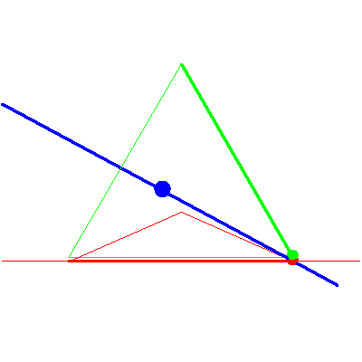
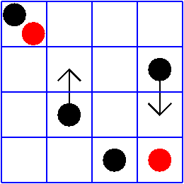

The line meeting a fixed point in P3


The line meeting a fixed point in P3 |
|
|  |
In the third, and subsequent stages of the specialization sequence, nothing happens to the solution line, even though the flags move quite a lot. This is the case (no,no) in Table2/Figure 8 of GLR, and the red checkers stay. |
|  |